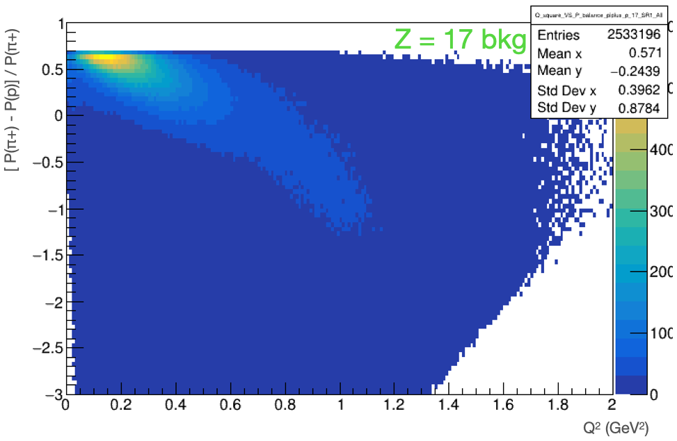

Definition of Q_square
We check the Lorentz invariant {Q}^{2} to study the scattering
Particle q_4vec = beam - piplus.at(1);
Q_square = (-pow(q_4vec.E(), 2) + pow(q_4vec.P(), 2))
Q squre distributions
{Q}^{2} distribution of signal and Z = 17 background without smearing.

{Q}^{2} distribution of signal and Z = 17 background after smearing.

We observe a bit wider shape after applying smearing.
Signal and Z = 17 background events show a bit different shapes,
but {Q}^{2} is not a good discriminating variable.
There are two peaks, one at ~0.2 {GeV}^{2} and the other at ~1.1 {GeV}^{2}.
It means that there are two different physics.
We would like to understand it.
Q^2 vs Momentum balance
We can think about momentum balance between outgoing {\pi}^{+} and proton.
At the first peak of {Q}^{2} distribution, the outoing {\pi}^{+} has larger momentum compared to the outgoing proton
because it is quasi-elastic (QE) scattering with small momentum transfer.
At the second peak of {Q}^{2} distribution, the outoing {\pi}^{+} would have comparable momentum with the outgoing proton.
However, momentum balance would prefer negative value due to different momentum cuts applied to {\pi}^{+} (> 0.1 GeV) and proton (> 0.3 GeV).
